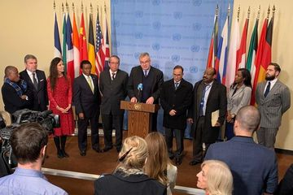
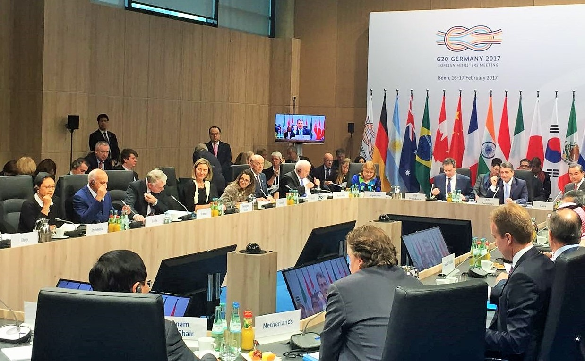
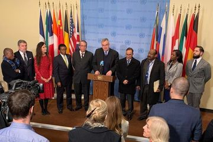
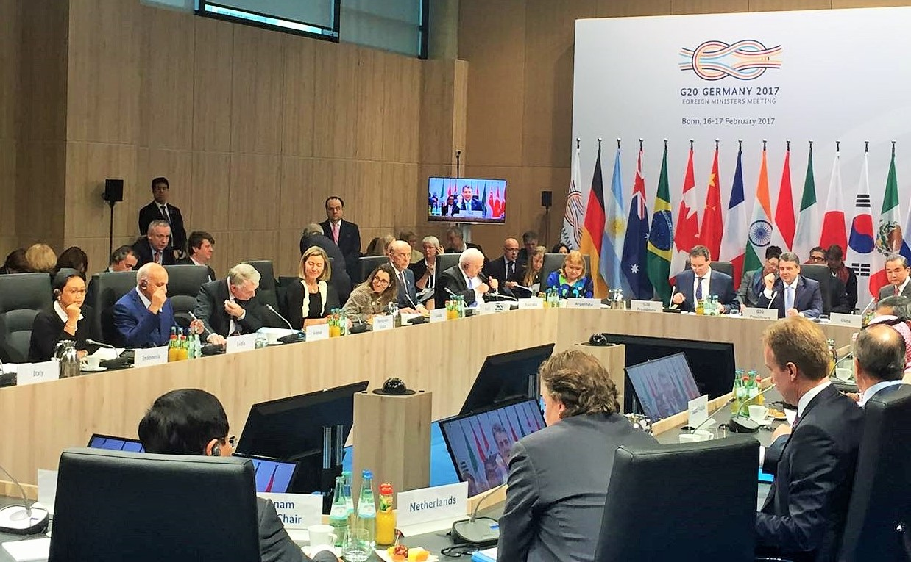

Penjelasan
Kerja sama multilateral adalah bentuk kolaborasi internasional yang melibatkan lebih dari dua negara atau
pihak yang bekerja sama untuk mencapai tujuan bersama. Dalam kerja sama ini, negara-negara atau
organisasi saling berinteraksi melalui forum internasional yang memungkinkan mereka untuk menangani
isu-isu global atau regional secara kolektif. Kerja sama multilateral sering kali difasilitasi oleh
organisasi internasional seperti Perserikatan Bangsa-Bangsa (PBB), G20, atau Organisasi Perdagangan
Dunia (WTO), yang menyediakan platform untuk diskusi, negosiasi, dan perumusan kebijakan bersama.
Tujuan utama dari kerja sama multilateral adalah untuk mengatasi tantangan yang tidak bisa diselesaikan
oleh satu negara saja, seperti perubahan iklim, terorisme, atau pandemi. Masalah-masalah global ini
membutuhkan pendekatan yang melibatkan banyak negara, karena dampaknya yang melintasi batas negara.
Dalam kerja sama multilateral, negara-negara dapat berbagi sumber daya, pengetahuan, dan teknologi untuk
mencapai solusi yang lebih efektif dan berkelanjutan. Sebagai contoh, dalam upaya penanggulangan
perubahan iklim, negara-negara di seluruh dunia bersepakat untuk mengurangi emisi gas rumah kaca melalui
Perjanjian Paris, yang merupakan hasil dari kerja sama multilateral di bawah naungan PBB.
Selain itu, kerja sama multilateral juga berperan dalam menjaga perdamaian dan keamanan internasional.
Melalui forum multilateral seperti PBB, negara-negara dapat merumuskan resolusi dan mengirimkan pasukan
penjaga perdamaian untuk mengatasi konflik dan mencegah kekerasan. Forum ini juga memberikan kesempatan
bagi negara-negara untuk berdiplomasi dan menyelesaikan perselisihan melalui dialog dan negosiasi, yang
mencegah terjadinya konfrontasi langsung. Oleh karena itu, kerja sama multilateral penting untuk
menciptakan dunia yang lebih stabil dan aman, dengan memberikan platform bagi negara-negara kecil dan
besar untuk berbicara dan bernegosiasi secara setara.
Kerja sama multilateral juga memberikan keuntungan dalam hal perdagangan dan ekonomi. Organisasi seperti
WTO memungkinkan negara-negara untuk membahas aturan perdagangan internasional dan mengurangi hambatan
perdagangan, seperti tarif dan kuota. Negara-negara anggota dapat saling menguntungkan melalui
kesepakatan perdagangan bebas yang mengatur perdagangan antarnegara, yang pada gilirannya meningkatkan
akses ke pasar global dan mendorong pertumbuhan ekonomi. Selain itu, kerjasama multilateral juga
membantu menciptakan standar global dalam berbagai sektor, seperti hak asasi manusia, lingkungan hidup,
dan regulasi ekonomi, yang memberikan kestabilan dalam hubungan antarnegara.
Namun, meskipun kerja sama multilateral membawa banyak manfaat, tantangan juga muncul, terutama terkait
dengan perbedaan kepentingan antar negara anggota. Negara-negara besar dengan kekuatan ekonomi atau
politik yang lebih kuat sering kali memiliki pengaruh yang lebih besar dalam pengambilan keputusan,
sementara negara-negara kecil mungkin kesulitan untuk mempengaruhi hasil akhir dari perundingan. Hal ini
dapat menimbulkan ketimpangan dalam implementasi kebijakan atau perjanjian multilateral, di mana
beberapa negara merasa bahwa kepentingan mereka tidak terwakili secara adil. Oleh karena itu, mekanisme
yang adil dan transparan sangat penting untuk memastikan bahwa semua negara memiliki suara yang setara.
Selain itu, proses pengambilan keputusan dalam kerja sama multilateral sering kali lambat dan kompleks
karena melibatkan banyak negara dengan beragam kepentingan. Negosiasi multilateral membutuhkan konsensus
yang luas, yang berarti bahwa perjanjian atau kebijakan yang dihasilkan harus diterima oleh semua pihak.
Hal ini sering kali menghambat pengambilan keputusan yang cepat dan efektif, terutama dalam menghadapi
masalah mendesak yang membutuhkan respons cepat, seperti krisis kemanusiaan atau bencana alam. Meskipun
demikian, kerja sama multilateral tetap menjadi landasan penting untuk mengelola isu-isu global, dengan
memberikan ruang bagi kolaborasi antar negara untuk mencapai solusi bersama.